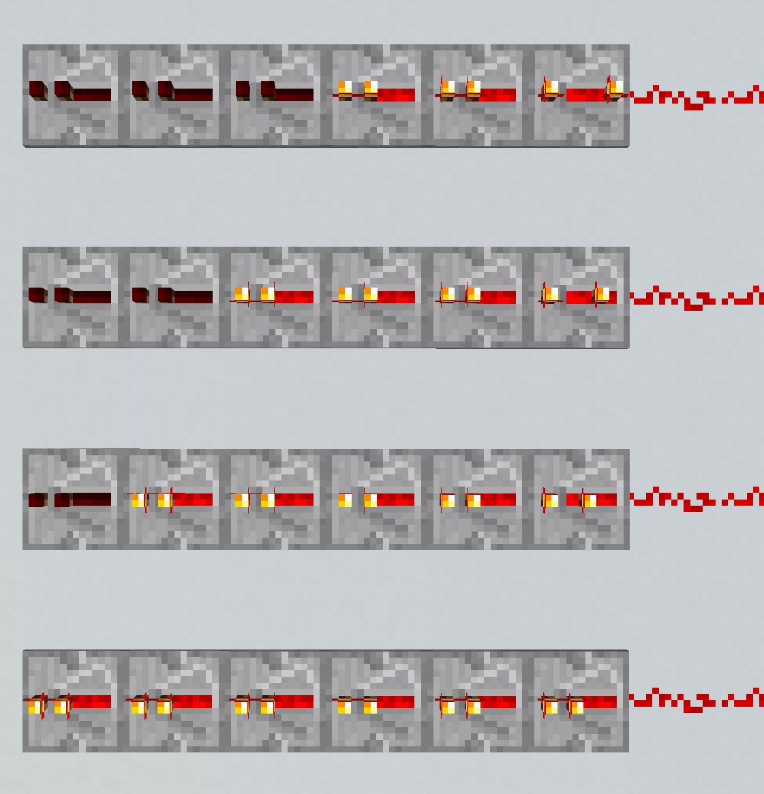

Redstone repeater v inventáři.
Redstone repeater je blok z kategorie redstone funkcí podobný elektrické diodě, je schopný prodloužit délku napětí a způsobit zpoždění (a prodloužení pokud se stav redstone napětí během tohoto času změní) trvání signálu o 2, 4, 6 nebo 8gt - 0.1s, 0.2s, 0.3s nebo 0.4s.
